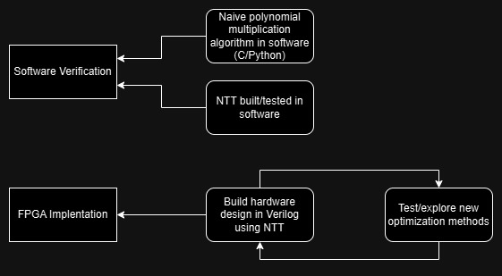
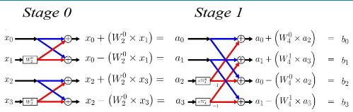
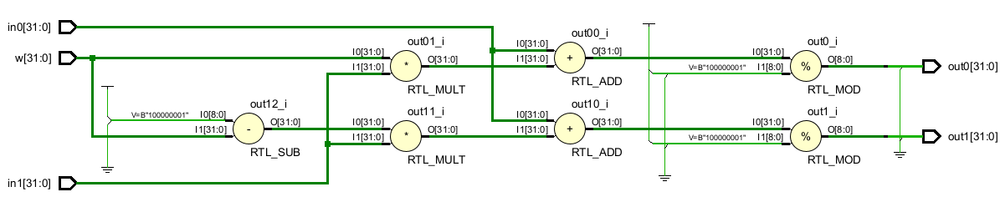
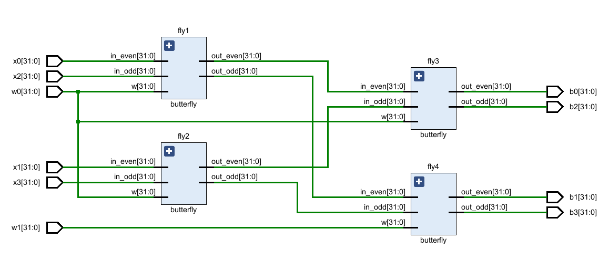

Our design will utilize the NTT (Number Theoretic Transform) and other optimization methods to increase the speed and efficiency of the polynomial multiplication used in post-quantum cryptography algorithms
Here is our design workflow diagram for the project. We need to build software implentations for verification. Then, we need to build the hardware design, using the NTT and other optimization methods.
The Number Theoretic Transform (NTT) is a very efficient method of performing polynomial multiplication by performing a discrete fourier transform over a polynomial ring. This reduces the number of individual multiplications that need to be performed.
The NTT transforms two polynomials to the frequency-domain, where they can be pointwise multiplied, and transformed back to the time-domain using the INTT, yielding the result of the polynomial multiplication. This transformation is optimized using a Fast-Fourier Transform (FFT) algorithm, the Cooley-Tukey butterfly in our case. To use this algorithm for the NTT, modular arithmetic is performed after each step to ensure the results are kept within a finite field.
Shown here is the development of the SystemVerilog code for the NTT. We started by creating a butterfly unit that takes two inputs and performs the Cooley-Tukey FFT algorithm using modular arithmetic. Then, we used this butterfly module to create a 4 input NTT module. This was accomplished by creating 4 instances of the butterfly module and reorganizing the inputs and outputs. For our final design, we are working on creating a module that can change input sizes with the use of a parameter. This is a similar concept to the 4 input design but it uses a for loop.
 